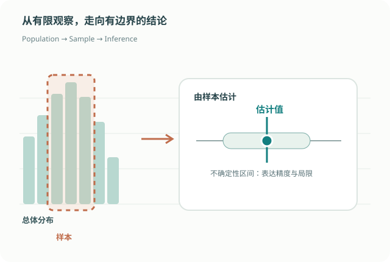

从杂乱的数据，
走向可信的结论。
统计学不只是算出一个平均数。它关心数据怎样产生、样本能代表谁、估计有多大不确定性，以及结论在什么前提下成立。

一个结论的可信度，取决于数据的来源与推断的假设。
先建立正确的统计直觉
这三章围绕同一个核心问题展开：如何从观察值形成有依据、可复核的判断？
一张学习路线图
从数据采集与描述，到概率模型、推断、因果分析，最终回到真实业务与科研决策。
建立问题、变量与数据质量意识
从随机现象走向置信区间和检验
区分相关关系、因果机制和统计伦理
回归、方差分析和贝叶斯思维
工具链、实验设计和完整研究
28 篇课程目录
所有 28 篇章节均可阅读，前 8 篇采用独立图解、数学推导与交互实验设计，其余 20 篇将逐篇深入审校。
什么是统计学
统计学的定义 · 描述vs推断 · 总体与样本 · 变量类型
已深度重构 02 / 基础与数据数据的类型与来源
定性vs定量 · 离散vs连续 · 横截面vs时间序列 · 抽样方法
已深度重构 03 / 基础与数据描述统计（一）
均值 · 中位数 · 众数 · 方差与标准差
已深度重构 04 / 基础与数据描述统计（二）
百分位数 · 箱线图 · 偏度与峰度 · 数据标准化
已深度重构 05 / 基础与数据数据可视化基础
直方图 · 散点图 · 条形图 · 可视化误区
已深度重构 06 / 概率与推断概率基础
古典概率 · 条件概率 · 贝叶斯公式 · 随机变量
已深度重构 07 / 概率与推断常见概率分布
二项分布 · 泊松分布 · 正态分布 · 中心极限定理
已深度重构 08 / 概率与推断抽样与抽样分布
简单随机抽样 · 分层抽样 · 抽样分布 · 标准误
已深度重构 09 / 概率与推断点估计与区间估计
矩估计 · 最大似然 · 置信区间 · 误差边界
已有正文 · 待深度精修 10 / 概率与推断假设检验入门
零假设 · 备择假设 · p值 · 显著性水平
已有正文 · 待深度精修 11 / 概率与推断常见假设检验
z检验 · t检验 · 卡方检验 · F检验
已有正文 · 待深度精修 12 / 概率与推断统计功效与样本量
Type I/II错误 · 功效分析 · 效应量 · 样本量计算
已有正文 · 待深度精修 13 / 关联、因果与规范相关分析
Pearson相关 · Spearman相关 · 相关矩阵 · 相关≠因果
已有正文 · 待深度精修 14 / 关联、因果与规范简单线性回归
最小二乘法 · R² · 残差分析 · 回归诊断
已有正文 · 待深度精修 15 / 关联、因果与规范p值与显著性危机
p-hacking · HARKing · 文件抽屉问题 · 可重复性危机
已有正文 · 待深度精修 16 / 关联、因果与规范多重比较与谬误
Bonferroni校正 · FDR · 辛普森悖论 · 幸存者偏差
已有正文 · 待深度精修 17 / 关联、因果与规范因果推断基础
混杂变量 · 工具变量 · DAG · RCT
已有正文 · 待深度精修 18 / 关联、因果与规范统计伦理与最佳实践
数据造假 · 选择性报告 · 预注册 · 开放科学
已有正文 · 待深度精修 19 / 统计模型多元线性回归
多元回归 · 共线性 · 交互项 · AIC/BIC
已深度重构 20 / 统计模型逻辑回归
odds与logit · 二分类 · ROC曲线 · 混淆矩阵
已深度重构 21 / 统计模型方差分析（ANOVA）
单因素ANOVA · 双因素ANOVA · 交互效应 · 事后检验
已深度重构 22 / 统计模型贝叶斯统计入门
先验与后验 · MCMC · 贝叶斯vs频率学派 · AI时代的贝叶斯
已有正文 · 待深度精修 23 / 实战与拓展统计学工具链
Python scipy.stats · statsmodels · R基础 · Jupyter
已有正文 · 待深度精修 24 / 实战与拓展真实数据分析实战
数据清洗 · EDA · 建模 · 报告全流程
已有正文 · 待深度精修 25 / 实战与拓展A/B测试实战
实验设计 · 样本量计算 · 显著性检验 · 决策规则
已有正文 · 待深度精修 26 / 实战与拓展机器学习中的统计学
偏差-方差权衡 · 正则化 · 交叉验证 · 贝叶斯优化
已有正文 · 待深度精修 27 / 实战与拓展现代因果推断
倾向得分匹配 · DID · 断点回归 · 工具变量
已有正文 · 待深度精修 28 / 实战与拓展综合项目：从问题到结论
选题 · 研究设计 · 数据分析 · 报告撰写
已有正文 · 待深度精修没有符合条件的章节。可以清空搜索或切换学习阶段。